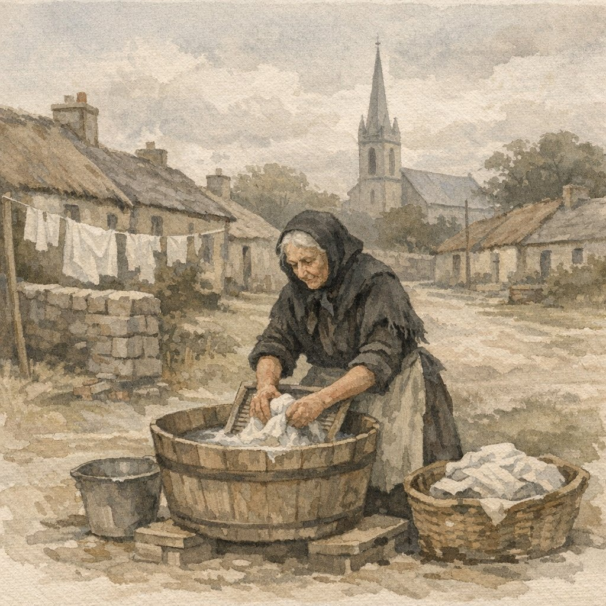

Relationship: 3rd great-grandmother (Higgins line)
Dublin Laundress, Widow Who Outlived Her Children
Jane Eustace was born on April 20, 1829, in Rathfarnham, a village on the southern outskirts of Dublin, Ireland. She was baptized that same day at the Church of the Annunciation. Her parents were James Eustace (c. 1798–1866) and Margaret Conlan (died 1881). Jane was the fourth of seven children: Laurence (1822), Edward (1824), Garret (1826), Jane (1829), James (1832), Michael (1833), and Anne (1836–1885).
On December 23, 1850, at age 21, Jane married James Higgins at Rathmines Parish, Dublin. The witnesses were Patrick Delaney and Elizabeth Doyle. A note in the baptismal records mentions the name "Doyle," suggesting a possible connection to the witness.
Jane and James settled in the Harold's Cross area of Dublin, where they raised a large family. Over 23 years, Jane gave birth to eleven children:
The family lived at addresses including Loughawn and 6 Fulham's Lane in Harold's Cross. Jane experienced the hardships common to 19th-century mothers: three of her children died in childhood, and she would outlive several more.
Jane's father James Eustace died in 1866. Her husband James Higgins died on May 10, 1880, at 6 Fulham's Lane, leaving Jane a widow at 51 with eight surviving children. Her mother Margaret Conlan died the following year, on May 25, 1881, at 5 Rathmines Avenue—the same address where Jane's sister Anne would die in January 1885.
The 1890s brought more loss. Son Christopher died in Toxteth Park, Lancashire, in 1891. Son William died in 1892 at the South Dublin Union Workhouse, his residence listed as Charlemont Street. Daughter Mary Jane died in 1895 at Harold's Cross Hospice. Son James died in November 1899.
The 1901 Irish Census found Jane living alone in Terenure, back in the Rathfarnham area where she was born. At 71, she was still working as a laundress—though she gave her age as 82 on the census form. A widow supporting herself through manual labor, decades after burying her husband and most of her children.
By 1908, Jane could no longer manage on her own. She entered the South Dublin Union, the same workhouse where her son William had died sixteen years earlier.
The workhouse was the last resort for Ireland's destitute—and for Jane Eustace, it became her final home. Built in 1703 and expanded under the Poor Law system, the South Dublin Union on James's Street was one of the largest workhouses in Ireland, housing thousands during the Great Famine and remaining in operation well into the 20th century.
Conditions were deliberately harsh, designed to discourage all but the truly desperate from seeking relief. Families were separated. Inmates wore uniforms. Work was mandatory—oakum picking, stone breaking, laundry. The stigma was profound; entering the workhouse meant admitting you had no family able or willing to support you.
Jane's son William died there in 1892, his residence listed as Charlemont Street—suggesting he had been living independently before whatever circumstances brought him to the Union. Sixteen years later, Jane followed. At 79, after a lifetime of labor and loss, she had outlived her ability to support herself. She spent her final three years within those walls.
The South Dublin Union later became St. James's Hospital, still standing today. The workhouse buildings where Jane lived and died are gone, replaced by modern medical facilities. But for generations of Dublin's poor, including two members of the Higgins family, it was the end of the road.
Through her son Laurence, who emigrated to America and married Mary Knight, Jane Eustace became an ancestor of the American Higgins line that continues today.
Notes: